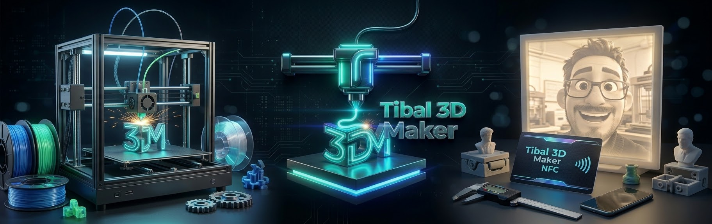
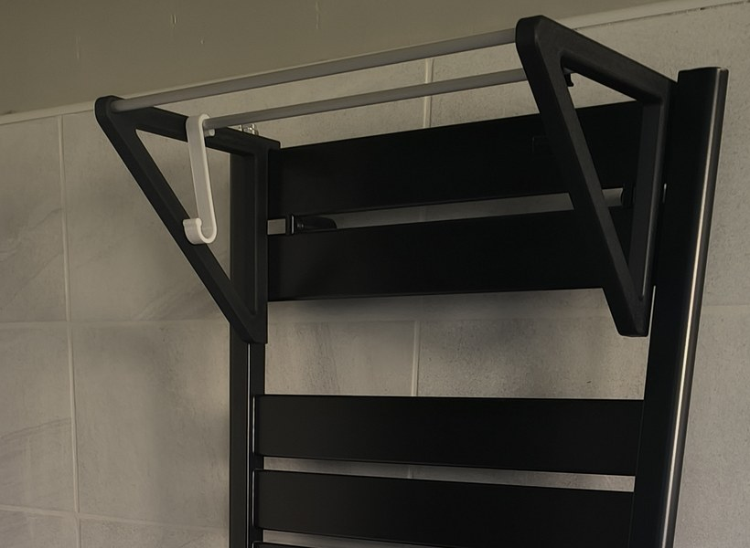
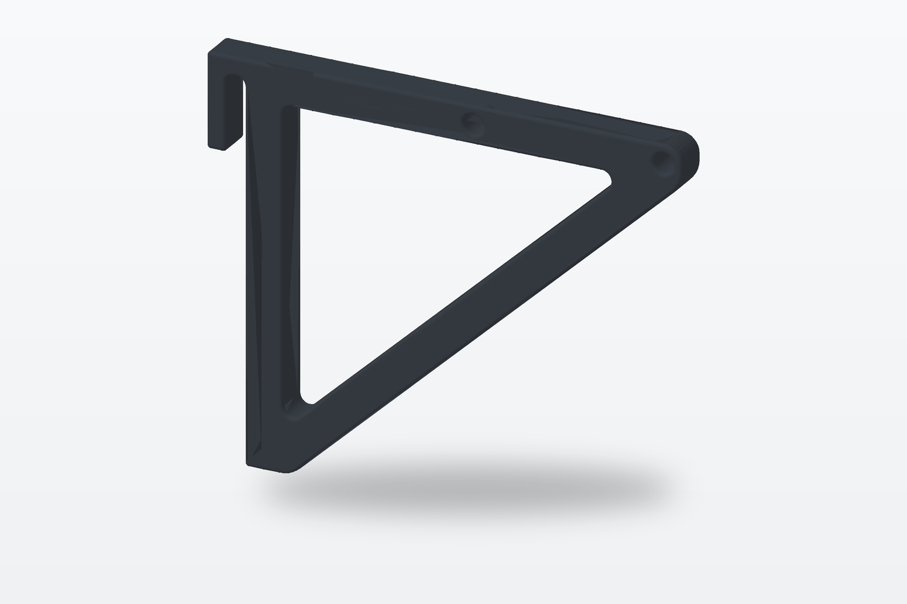

01
Modélisation CAO
Pièces techniques, boîtiers, supports et adaptations dessinés à partir de vos dimensions ou de votre pièce existante.
Étudier une pièceFabrication sur mesure — Normandie
Modélisation CAO et impression 3D pour transformer une idée, remplacer une pièce introuvable ou créer une adaptation utile.
CAO paramétrique

Conception
Prototypage
Adaptation
Réparation
Personnalisation
01 — Expertises
Du simple adaptateur à la pièce technique complexe, chaque projet est étudié selon son usage, ses dimensions et les contraintes de fabrication.
Pièces techniques, boîtiers, supports et adaptations dessinés à partir de vos dimensions ou de votre pièce existante.
Étudier une piècePrototypes et pièces fonctionnelles fabriqués avec le filament adapté à l’usage, à l’esthétique et au niveau de contrainte.
Présenter un projetRemplacement de pièces cassées, accessoires pratiques, créations personnelles et petites séries réalisées avec précision.
Décrire votre besoin02 — Réalisations


Pièce fonctionnelle
Cette paire de supports triangulaires en PETG accueille une tringle en tube aluminium de 10 mm. L’ensemble a été imaginé pour favoriser le rayonnement de la chaleur du sèche-serviettes dans la pièce et améliorer le séchage des serviettes.
Création personnalisée
Organisation pratique adaptée à une collection et aux dimensions disponibles.
Objet personnalisé
Cadre unique mettant une image en relief grâce à la variation d’épaisseur du matériau.
03 — Méthode
Chaque demande est étudiée avec soin avant fabrication afin d’aligner faisabilité, qualité, durée de réalisation et budget.
Description, mesures et contexte d’usage. Les photos pourront être échangées après un premier contact.
Faisabilité, matière, contraintes et options possibles.
Modélisation précise puis validation avant fabrication.
Préparation, impression et contrôle de la pièce finale.
04 — À propos
Mon parcours relie métiers manuels et techniques : aide-charpentier, formation en maintenance industrielle (bac pro MSMA), puis ajustage aéronautique. Aujourd’hui maroquinier, j’effectue aussi des missions en impression 3D pour développer des outils ergonomiques.
Ces expériences nourrissent une même approche : comprendre les contraintes d’un usage, travailler avec précision et concevoir des solutions adaptées. Avec Tibal 3D Maker, je mets cette polyvalence au service de pièces et d’objets sur mesure.
05 — Préparer un projet
L’activité est en préparation et aucune commande n’est acceptée pour le moment. Présentez votre projet en amont : nous pourrons ensuite échanger des photos ou des fichiers par e-mail si cela aide à l’étudier.
Saint-Pierre-lès-Elbeuf + 30 km